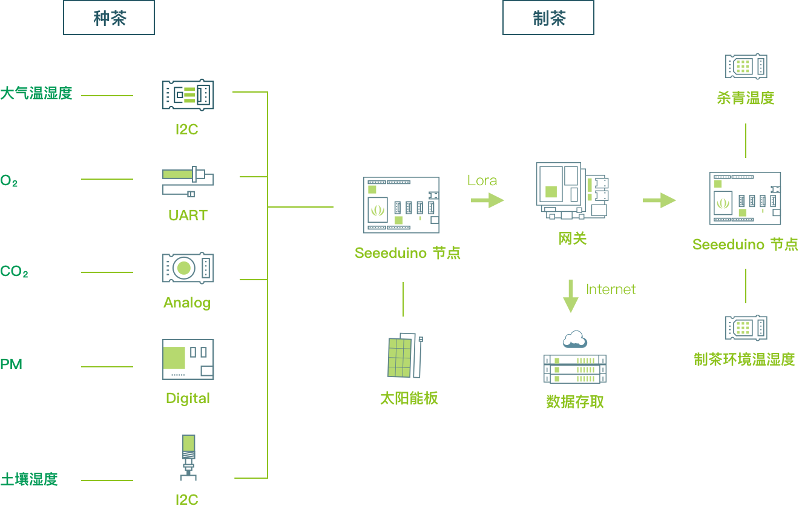

×
- About
- Solution
- Data
- Application
The loT Hardware Enabler
Presented by seeed


北纬30°，东经103°。坐落在四川雅安东北部的蒙顶山，是青藏高原与四川盆地在极度海拔落差之间的产物。山脉由西向东，茶园堆青叠翠，绿浪翻涌。这对在蒙顶山茶区土生土长的老邓来说，是最稀松平常的风景。
老邓不老，82年生，是蒙顶山茶区众多茶园主人里比较少见的80后，最爱喝自己茶园里的明前手工甘露，管着分布在1100多米海拔高度的方圆50亩的茶园。
小时候，因为家里有个小规模的老川茶园，父辈们种茶制茶卖茶过活的耳濡目染，老邓对茶多少有些独特的情感。“虽然跟茶结缘早，但长大了还是选择离开，去了城市生活，高山种茶太苦了。” 但2013年，城市创业失利，老邓命运般地回到了茶园，开始正经学茶、种茶、制茶，延续着祖辈留下的生活方式。
“都说：扬子江心水，蒙山顶上茶。高山种茶海拔高，有机生态的生长环境，茶品质有保障。但同时因为茶园种植密度低，管理成本高，茶树发芽不齐，采茶难度大，导致高山茶产量小，在市场上的价值优势体现不出来。”
怎么让消费者深入了解高山茶的有机生长和制茶环境，提升高山茶的价值所在，是老邓这两年一直在思考的问题。机缘巧合，因为认识了上山探茶、为Seeed IoTea智慧生态茶园方案寻找试点茶园的樊老师（戳此樊老师上山找茶趣的故事），这个问题出现转机。
双方确定合作意向后，方案细节探讨、原型制作与测试，到方案安装和调试，2018年3月底，高山茶与新科技结合，方案最终成功落地。

Seeed IoTea智慧生态茶园方案致力于如何在不破坏原本山茶古旧的种茶－摘茶－制茶生态的基础上，让技术帮助茶农更科学、生理地管理广袤的茶园，同时对消费者开放实时监测茶园的渠道，让大众直观地了解高山茶种茶、制茶的生态。
由一系列传感器、节点，网关等组成的智能环境监测系统，可以实时收集种茶过程中的大气温湿度、二氧化碳、氧气、PM、光照，土壤温湿度等影响茶树生长的关键数据。同时收集制茶过程中的房间温湿度、以及杀青温度。各个节点通过Lora协议把采集到的数据传输给网关，然后上传到云端数据库，最终通过可视化工具，把茶叶从茶园到制茶过程的数据以图表清晰呈现。
实时数据
 温度
温度
 湿度
湿度
 日照
日照
- 二氧化碳
- 氧气
 灰尘
灰尘

历史数据
温度/°C湿度/%日照灰尘/pcs 0.01cf二氧化碳/PPM
氧气/%


Seeed IoT智慧生态方案，通过对大气压、大气温湿度、二氧化碳、氧气、PM、土壤温湿度进行数据监测，通过无线技术传输至云端处理，并在页面上直观显示。从而达到农林业种植、畜牧业养殖的智能化管理，减轻管理的工作量和成本。茶园之外，Seeed IoT智慧生态方案可延伸应用农业、林业、畜牧业。